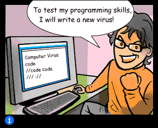

¿Es ético esto del Hacking?

Realmente el término Hacking Ético hace referencia a realizar pruebas que simulan ataques contra la infraestructura tecnológica de una entidad u organización pero siempre con su consentimiento.
Por tanto, no tiene nada que ver el término Hacking ético con ser un Hacker activista, Entre los Hackers encontramos a ciberdelincuentes, hackers no activistas y los hacktivistas.
No podemos aseverar que las actuaciones de los hacktivistas sean siempre éticas, sin embargo, quiénes realizan estas acciones tienen la firme convicción de que lo que hacen está bien (Igual que cuando un antitaurino salta a una plaza de toros o greenpeace se encarama a un edificio). Así que se infringen ciertas normas en persecución de lo que pretenden defender. El juicio de valor lo dejamos para cada uno, sin embargo, no hay que tomarse el tema a la ligera, toda acción tiene una consecuencia
Bibliografía
- Definición de Hacking ético en Internet Glosario. http://www.internetglosario.com/1131/hackingetico.html